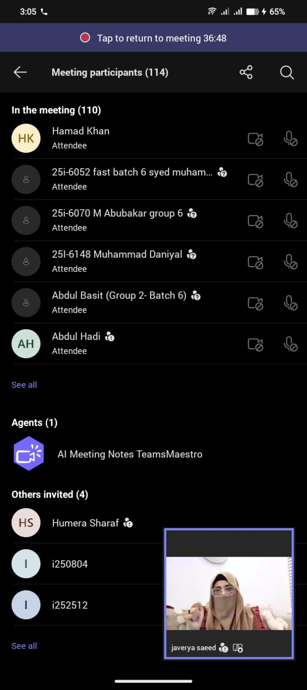

- Participated in 2-hour virtual orientation via Teams with ALKHIDMAT representative.
- Discussed foundation's mission, vision, and core values.
- Learned about major projects: food distribution, educational support, emergency relief.
- Received briefing on volunteer expectations, code of conduct, and reporting.
- Asked questions to clarify role and took notes on data privacy.
- Completed post-orientation feedback form.
